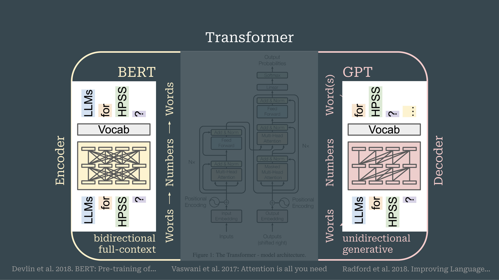
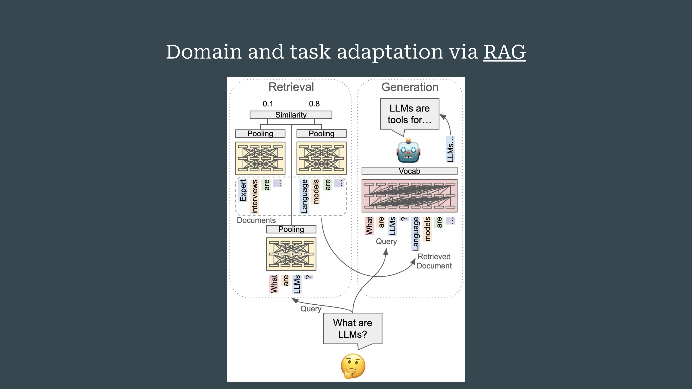

3 Large Language Models in History, Philosophy, and Sociology of Science
Overview
This chapter provides a comprehensive primer on Large Language Models (LLMs), charting their foundational architectures, adaptation for scientific domains, and specific applications within the History, Philosophy, and Sociology of Science (HPSS). It begins by introducing the Transformer, a core neural network architecture that underpins modern LLMs. The discussion then differentiates between encoder-based models like BERT, which excel at bidirectional contextual understanding, and decoder-based models such as GPT, renowned for their generative capabilities.
The chapter traces the rapid evolution of scientific LLMs, highlighting a proliferation of domain-specific models since 2018. It meticulously outlines key adaptation methods, including pre-training, continued pre-training, and prompt-based techniques. A significant focus is placed on Retrieval-Augmented Generation (RAG), a multi-model pipeline that enhances LLM responses by integrating retrieved information.
Furthermore, the analysis categorises LLM applications in HPSS into four distinct areas: managing data and sources, analysing knowledge structures, understanding knowledge dynamics, and examining knowledge practices. Finally, the chapter addresses HPSS-specific challenges, such as the historical evolution of language and the need for critical, reconstructive reading. It advocates for greater LLM literacy and shared datasets, whilst championing the integration of computational methods without compromising core HPSS methodologies.
3.1 Agenda and Scope

This chapter outlines an agenda to deliver a foundational primer on Large Language Models and their adaptation to scientific domains. It further intends to summarise current applications within the History, Philosophy, and Sociology of Science (HPSS) and to share critical reflections for wider discussion. Recognising a heterogeneous audience, the text prioritises accessibility whilst delivering necessary technical insights.
3.2 The Transformer Architecture

The foundational Transformer architecture, which underpins all contemporary Large Language Models, was introduced by Vaswani and colleagues in their 2017 paper, Attention is all you need. Initially conceived for language translation, this model operates through two interconnected streams: an encoder and a decoder. The encoder processes an entire input sentence simultaneously, allowing each word to interact bidirectionally with every other, thereby constructing a full contextual representation.
Conversely, the decoder generates the output sentence sequentially, with each new word able to access only its predecessors. This unidirectional flow is essential for coherent text generation. Each word produced by the decoder is then fed back into the input stream, creating a loop that continues until the target sentence is complete. Following the Transformer’s introduction, its individual encoder and decoder streams were re-engineered to develop distinct families of pre-trained language models.
3.3 Encoder-Only Models

Focusing on the encoder component of the Transformer architecture reveals its function in transforming linguistic input into numerical representations. The process begins as words undergo input embedding, converting discrete tokens into continuous vectors. Positional encoding is then appended to provide vital information about the tokens’ sequential order, a crucial addition given the Transformer’s non-sequential processing nature.
This combined input then feeds into a stack of identical encoder layers. Each layer comprises two primary sub-layers: a multi-head attention mechanism, which enables the model to attend to information from diverse representational subspaces concurrently, and a simple feed-forward network. Both sub-layers are followed by an ‘add and norm’ step, incorporating residual connections and layer normalisation essential for training deep networks. This architecture aims to develop models capable of profound language understanding, which can then be applied to various Natural Language Processing tasks.
3.4 BERT: Bidirectional Understanding

The encoder side of the Transformer architecture gave rise to the BERT family of models, which remain highly prevalent. BERT, an acronym for Bidirectional Encoder Representations from Transformers, operates on the principle that each word within an input stream can interact with every other word. This bidirectional interaction enables the model to construct a comprehensive, full-context understanding of the entire input sequence simultaneously.
The term ‘bidirectional’ signifies that words can consider context from both preceding and succeeding tokens, whilst ‘encoder-based’ denotes its derivation from the original Transformer encoder. Devlin and colleagues pioneered this model in 2018. Its architecture holds significant promise for applications as LLMs within HPSS, particularly when engaging with specialised vocabularies.
3.5 GPT: Unidirectional Generation

Conversely, the decoder side of the Transformer architecture forms the basis for Generative Pre-trained Transformer (GPT) models, which power contemporary systems such as ChatGPT. These models are inherently unidirectional, capable of examining only preceding tokens. This structural characteristic, however, enables them to generate novel text, a capability largely absent in BERT-like models.
Consequently, GPT and BERT models serve fundamentally different purposes: GPT excels at language generation, whilst BERT specialises in coherent sentence understanding. Beyond these two primary distinctions, the field also encompasses models combining encoder-decoder functionalities, alongside sophisticated methods for employing decoders in an encoder-like fashion, exemplified by architectures such as XLM and XLNet. Radford and colleagues introduced the foundational GPT model in 2018.
3.6 The Evolution of Scientific LLMs

A comprehensive overview reveals the substantial evolution of Large Language Models, particularly those tailored for scientific domains. The landscape exhibits a greater proliferation of encoder-based (BERT-type) models compared to decoders, indicating considerable developmental activity on the encoder side. Early, popular models in this scientific context included BioBERT, Specter, and Cyber.
The field has since expanded to encompass a diverse array of domain-specific models, catering to areas such as biomedicine, chemistry, material science, climate science, and social science. For researchers in HPSS, this trend suggests a growing opportunity either to leverage existing models or to develop bespoke architectures pertinent to their specific research needs.
3.7 Domain and Task Adaptation

Adapting Large Language Models to specific scientific language necessitates several distinct approaches. Initial pre-training involves the model learning language by either predicting the next token, as seen in GPT models, or by predicting randomly masked words, characteristic of BERT models. This foundational stage, however, demands prohibitive computational resources.
A more accessible strategy involves continued pre-training, where an existing model is further trained on domain-specific language. Alternatively, researchers can add extra layers atop pre-trained models, fine-tuning them to function as classifiers for specific tasks. Contrastive learning also emerges as a crucial technique for generating sentence or document embeddings from existing word embeddings, thereby facilitating similarity comparisons. Sentence BERT, a widely adopted model, exemplifies this approach.
3.8 Retrieval-Augmented Generation (RAG)

Retrieval-Augmented Generation (RAG) represents a sophisticated pipeline rather than a singular model, orchestrating the action of at least two distinct models. The process commences when a user query is encoded into a sentence embedding by a BERT-type model. This model then searches a document database, retrieving the most semantically similar passages.
These retrieved passages are then integrated into the prompt of a generative model, which formulates a comprehensive answer based on this newly augmented context. The RAG framework is now commonplace in contemporary LLM applications, exemplified by ChatGPT’s ability to search the internet. More broadly, advanced reasoning agents are not merely single LLMs but intricate systems that combine LLMs with a diverse array of other computational tools.
3.9 A Timeline of Scientific LLMs

A comprehensive timeline documented by Ho and colleagues in 2024, spanning from 2018 to 2024, illustrates the rapid proliferation of pre-trained LLMs engineered for scientific texts. The timeline commences in 2018 with the seminal BERT model. Subsequent years witnessed a significant expansion: 2019 introduced FLAIR; 2020 saw BioFLAIR, G-BERT, BioELMo, and RoBERTa. By 2021, T5, GPT-2, RadBERT, SciBERT, and ClinicalBERT had emerged.
The year 2022 marked a substantial increase across all categories, with models such as SciFive, BioBART, MedGPT, SciGPT2, and a multitude of encoders including CovidBERT, SPECTER, NukeBERT, and BioBERT. Development accelerated in 2023, introducing BioReader, DRAGON, BioMedGPT, Clinical-T5, Galactica, BioGPT, and an extensive array of encoders like SciEdBERT, MatSciBERT, ChemBERT, PubMedBERT, MathBERT, ClimateBERT, and ProteinBERT. The timeline extends into 2024 with GIT-Mol, Patton, and MOTOR, underscoring the dynamic and expanding landscape of scientific LLMs.
3.10 Adaptation Approaches in Detail

Adapting Large Language Models to specific domains and tasks primarily involves four distinct approaches. These methods allow for the customisation of general-purpose models to meet the nuanced demands of specialised fields like HPSS.
The main approaches are:
Pre-training, which focuses on refining the model’s vocabulary for domain-specific queries, often through continuous training on relevant textual corpora.
Extra Parameters, which facilitates task-specific adaptation by adding dedicated layers to the model for functions like sentiment analysis or named entity recognition.
Prompt-Based methods, which guide the LLM’s behaviour through carefully constructed prompts for tasks like masked language modelling or term definition.
Contrastive learning, which generates robust representations by comparing inputs, proving invaluable for information retrieval and semantic search.
3.11 LLM Applications in HPSS

A recent survey identifies four principal categories for the application of Large Language Models within HPSS research.
Dealing with data and sources: This includes parsing and extracting information like publication types or citations, alongside interactive engagement with sources through summarisation or RAG-type conversational interfaces.
Knowledge structures: This focuses on identifying and mapping elements within knowledge domains, such as scientific instruments or chemicals, and delineating relationships between disciplines.
Knowledge dynamics: This addresses the evolution of knowledge over time, facilitating the study of conceptual histories and the identification of novelty, such as breakthrough papers.
Knowledge practices: This examines the social dimensions of knowledge production, involving argument reconstruction, citation context analysis, and discourse analysis.
Notably, there is an accelerating interest in LLMs within HPSS, with findings increasingly appearing in journals traditionally less amenable to computational methods. This trend is attributed to the semantic power of these models, which appeals to qualitative researchers and philosophers.
3.12 Key Distinctions and Challenges

The application of LLMs exhibits a spectrum of customisation, from off-the-shelf usage of tools like ChatGPT to the development of novel architectures. Despite this versatility, several recurring concerns persist, including the demand for significant computational resources, the opaqueness of complex models, and a lack of sufficient training data. Researchers consistently encounter trade-offs between model types, underscoring the principle that no single model serves all purposes; selecting the adequate model for a specific objective remains paramount.
Encouragingly, a discernible trend towards increased accessibility is evident, exemplified by tools like BERTTopic for topic modelling. Fundamentally, understanding key distinctions proves vital: differentiating between encoder, decoder, and encoder-decoder architectures; recognising the various fine-tuning strategies; and appreciating the profound difference between word and sentence embeddings.
3.13 HPSS Challenges and Future Directions

Applying LLMs within HPSS presents unique challenges. The historical evolution of concepts and language poses a significant hurdle, as models trained on modern data may introduce anachronistic biases. Furthermore, HPSS adopts a reconstructive and critically reflective perspective, necessitating an ability to read between the lines and discern subtle discursive strategies for which current LLMs are not inherently equipped.
To address these issues, several recommendations emerge. Cultivating LLM literacy is paramount to prevent the uncritical adoption of off-the-shelf tools. The HPSS community should also actively develop shared datasets and benchmarks tailored to its specific needs. Whilst translating HPSS problems into Natural Language Processing tasks, researchers must remain steadfast in their methodological focus.
Nevertheless, these models present novel opportunities for bridging qualitative and quantitative research. Reflecting upon HPSS’s own pre-history, particularly methods like co-word analysis pioneered by scholars such as Callon and Rip in the 1980s, offers valuable insights into theoretically informed tool development for contemporary computational endeavours.